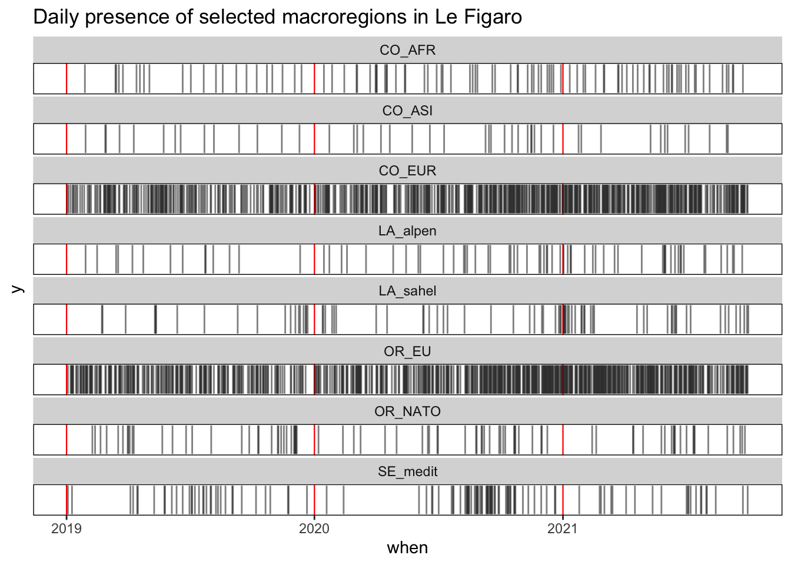
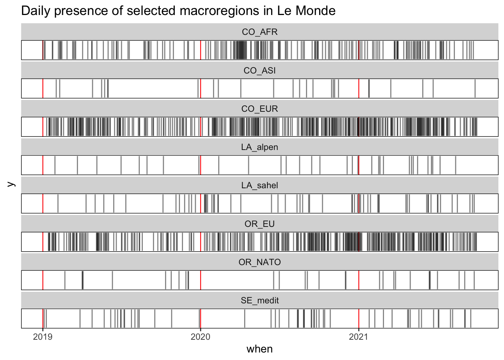
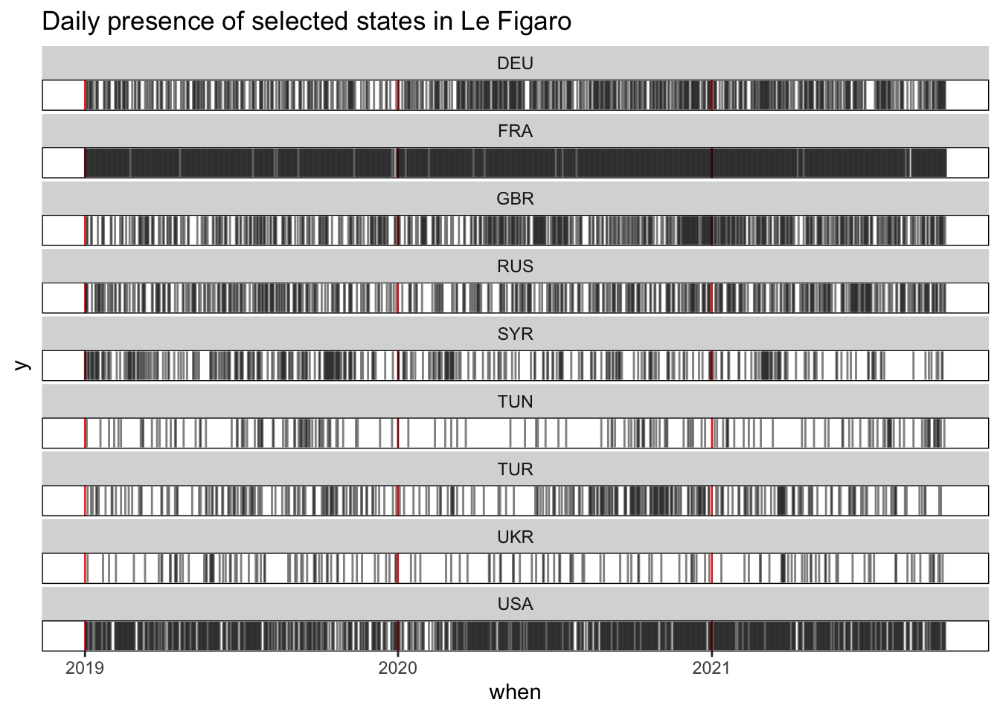
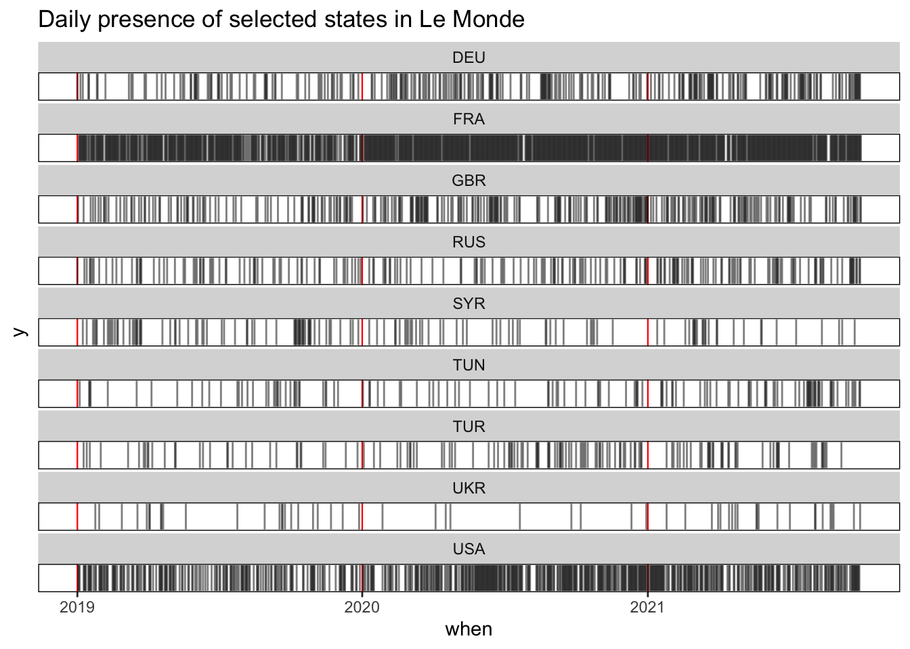

9 Agenda
In this section we try to define an alternative measure of salience of a geographical entity (region or state) base on the duration of presence in the agenda rather than on the total number of news. As we are speaking from daily newspapers, we will try to estimate the number of days where an entity is present over a time period.
9.1 Data
We load an hypercube of news related to two newspaper (Le Figaro and Le Monde) characterized by an important an regular flow of news with an important proportion of international news. We consider two time periods of one year, 2019 and 2020.
9.1.1 Boolean table
We create for each type of geographical entities a boolean matrix crossing the existence or non existence of a newsby date
# Le Figaro
tab1<-hc_figaro[,.(n=min(1,.N)),.(where1,when)] %>% dcast(formula = when~where1,fill = 0)
tab2<-hc_figaro[,.(n=min(1,.N)),.(where2,when)] %>% dcast(formula = when~where2,fill = 0)
tab_figaro<-cbind(tab1,tab2)
kable(tab_figaro[1:10,c("when","FRA","GBR","RUS","USA","CHN","OR_EU","CO_EUR")],
caption = "Extract from boolean matrix of Le Figaro")| when | FRA | GBR | RUS | USA | CHN | OR_EU | CO_EUR |
|---|---|---|---|---|---|---|---|
| 2019-01-01 | 1 | 0 | 0 | 0 | 0 | 0 | 0 |
| 2019-01-02 | 1 | 0 | 1 | 1 | 1 | 0 | 1 |
| 2019-01-03 | 1 | 1 | 1 | 1 | 1 | 1 | 0 |
| 2019-01-04 | 1 | 1 | 1 | 1 | 1 | 0 | 1 |
| 2019-01-05 | 1 | 0 | 0 | 0 | 0 | 0 | 0 |
| 2019-01-06 | 1 | 0 | 0 | 1 | 0 | 0 | 0 |
| 2019-01-07 | 1 | 0 | 0 | 1 | 1 | 1 | 1 |
| 2019-01-08 | 1 | 1 | 0 | 1 | 1 | 1 | 0 |
| 2019-01-09 | 1 | 1 | 1 | 1 | 0 | 1 | 0 |
| 2019-01-10 | 1 | 0 | 0 | 0 | 1 | 1 | 1 |
# Le Monde
tab1<-hc_lmonde[,.(n=min(1,.N)),.(where1,when)] %>% dcast(formula = when~where1,fill = 0)
tab2<-hc_lmonde[,.(n=min(1,.N)),.(where2,when)] %>% dcast(formula = when~where2,fill = 0)
tab_lmonde<-cbind(tab1,tab2)
kable(tab_lmonde[1:10,c("when","FRA","GBR","RUS","USA","CHN","OR_EU","CO_EUR")],
caption = "Extract from boolean matrix of Le Monde")| when | FRA | GBR | RUS | USA | CHN | OR_EU | CO_EUR |
|---|---|---|---|---|---|---|---|
| 2019-01-01 | 0 | 0 | 1 | 0 | 0 | 0 | 0 |
| 2019-01-02 | 0 | 1 | 0 | 1 | 1 | 0 | 0 |
| 2019-01-03 | 1 | 0 | 0 | 1 | 0 | 0 | 0 |
| 2019-01-04 | 1 | 0 | 0 | 1 | 0 | 0 | 0 |
| 2019-01-05 | 1 | 0 | 0 | 0 | 0 | 0 | 0 |
| 2019-01-06 | 1 | 0 | 0 | 0 | 0 | 0 | 0 |
| 2019-01-07 | 1 | 0 | 0 | 0 | 0 | 0 | 0 |
| 2019-01-08 | 1 | 0 | 0 | 0 | 1 | 0 | 0 |
| 2019-01-09 | 1 | 1 | 0 | 1 | 0 | 0 | 0 |
| 2019-01-10 | 1 | 0 | 1 | 1 | 0 | 0 | 1 |
9.1.2 Visualization
An interesting solution for the visualization of such boolean data is the use of X-ray diagrams used in textual analysis for the visualization of wrods distribution in a text.




9.2 Models
Different options of modelling are available for the evaluation of the cross-effects of media (m) and time period (t) on the probability to find a given number of news speaking from a geographical entity (s). We can separate initialy two family of models :
Poisson models family will evaluate the number of news from media m at time t speaking from spatial object s (Nmts) as a function of the total number of news produced during the same period by the same media (Nmt) and parameters to be estimated concerning peaks of interest during certain periods of time (k1..kt) and specific focus of some medias on the spatial object (w1..wm).
Logit models family will use a boolean approach and try to evaluate what is the probabilty to have at least one news about the spatial unit during a period of time which could typically a day as we are examining daily newspapers. This second family of models fit better in our opinion to the problem of measure of the agendas.
Not necessary to add that both models can finally be combine in hybrid models like the zero-inflated Poisson model which will be analyzed in final part of the discussion.